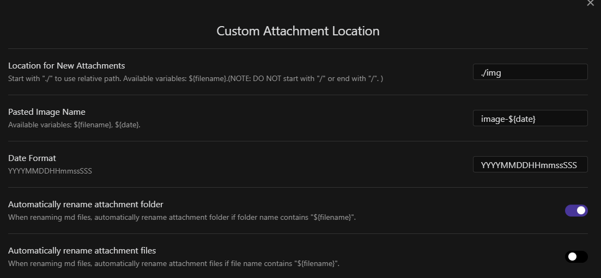
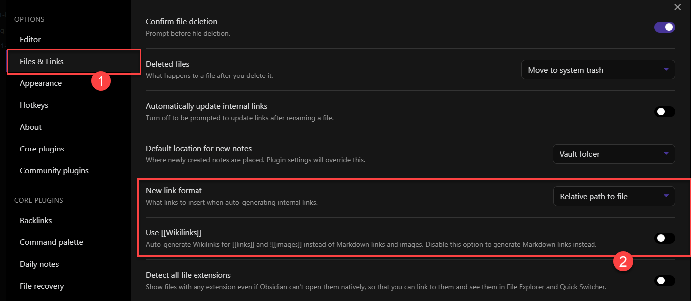
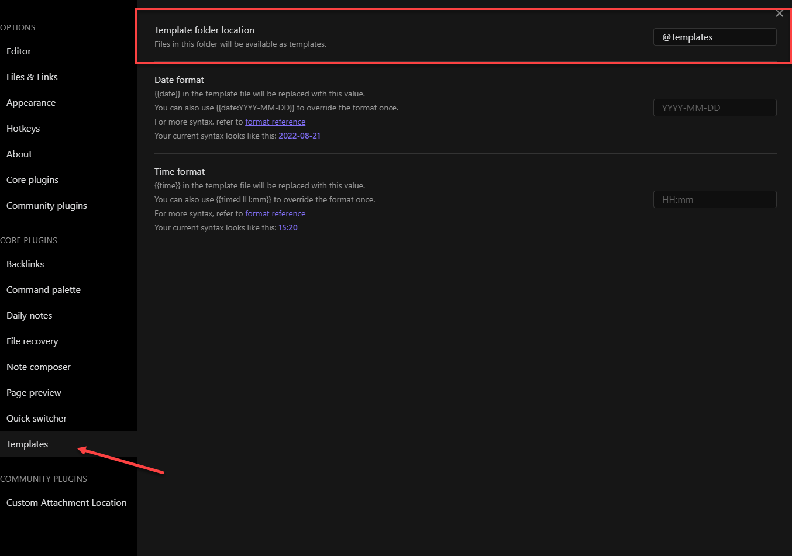
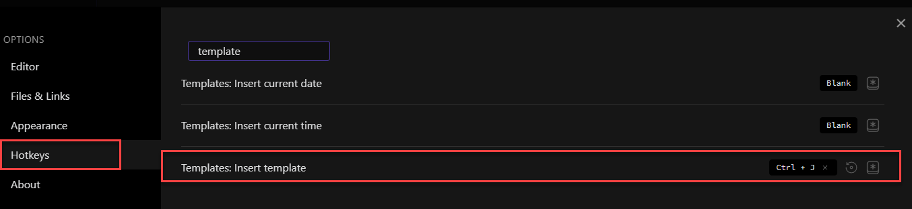
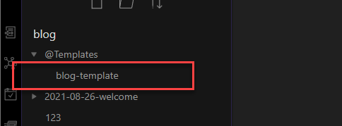
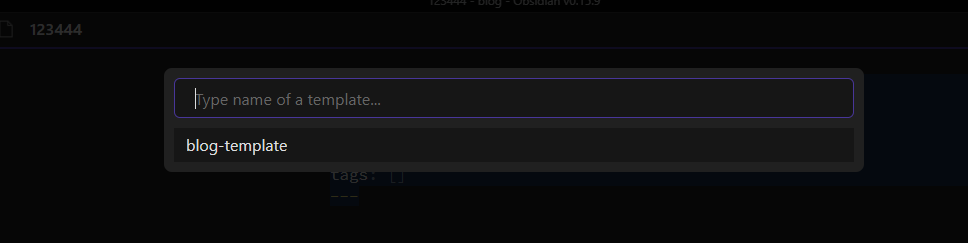
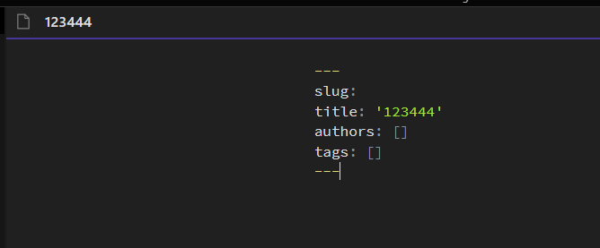

使用 Obsidian 來寫 Docusaurus 似乎也是個好選擇，以下是我嘗試後的一些設定方式
環境設定
因為 Obsidian 可以將資料夾視為一個 Vault，我們可以將 Docusaurus 下的 Doc & Blog 兩個資料夾設定為兩個 vault 使用，這篇文章會使用 blog 來做示範
Open Folder as Vault
將 blog 資料夾開啟，這時候會在 blog 資料夾下新增 .obsidian 的資料夾，所以在 .gitignore 需要設定排除 .obsidian 資料夾，既然都開啟 .gitignore 了，順便排除 @Templates 資料夾 (可自行命名，是用來存放 Obsidian Template 的地方，等等會講到)
安裝 community plugin
這裡需要安裝兩個 plugin
-
Custom attachment Location: 方便我們貼圖時可以將圖片動態指定我們設定的位置，以下是我設定的方式 (可自行設定)

因為貼圖路徑的關係，還有一個地方需要配合調整，在
Files & Links的地方
Step 2 需要將連結的格式改為相對路徑，這樣
docusaurus才能正常判讀檔案位置，當然就不能使用wikilinks的格式，所幸這些設定檔都是跟著 Vault 走，所以修改不會影響到其他人 -
mdx as md: 因為
docusurus支援 md 和 mdx 兩種文件格式，所以 Obsidian 需要安裝這個才可以看到兩種檔案格式
設定 Templates
剛剛在前面 .gitignore 時多排除一個 @Templates 的資料夾，當然現在要多新增一個 @Templates 的資料夾在 Blog 資料夾(Vault) 內，並多做以下兩點設定
-
Template 為 Core Plugin，預設是開啟狀態，所以 Settings 內可以看到
Templates的選單
-
設定 Hotkey，這裡可以依各人喜好設定

當這些設定完成後，這時候我們就可以來新增一個 Blog Template 供後面新增時使用，在 @Templates 資料夾下新增一個 Note，名稱自取

在該篇 Note 內，輸入以下內容，這些內容就可以在之後新增 Notes 時透過 Insert template 的方式將內容加入
1 | --- |
能用變數說明
{{title}}: 目前這篇 Note 的標題{{date}}和{{time}}是日期變數 - (memo: 這邊沒有使用到)
使用方式
- 新增一篇 Note 並輸入標題
- 使用 Hotkey 來新增 Template，當有多個 templates 時，會出現選單讓我們選擇要套用哪一個
Templater plugin
這個 plugin 很強大，可以允許我們寫 script 來處理各種 template 樣式，這邊有一個介紹影片，plugin 文件，當然如果使用 Templater plugin 剛剛寫的 template 要做些調整
1 | --- |
另外要留意的是 Hotkey 的部分，Templater 有自己的 Hotkey 設定，所以這邊會建議只使用一套，就看哪一套適合自己的寫作節奏


小結
當上述這些設定完成後，Dousaurus 的 Doc 或 Blog 的編寫就會更貼近一般文書編輯的模式，圖片，表格等都可以使用 Obsidian 強大的功能來完成編輯